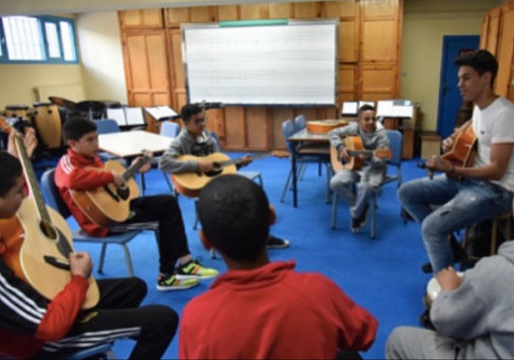

Empowering Communities: My Volunteering Experiences
As a student coming from a developing country, Morocco, I place a significant emphasis on engaging in volunteering work and offering assistance to those facing hardships. I am deeply aware of the privilege I possess in being able to pursue my education abroad, while recognizing that many others are not as fortunate. Therefore, my objective is in twofold: to advance in my career path while also ensuring that I can contribute meaningfully to my community.
1) Empowering Women Education in Morocco
"Give a man a fish, and you'll feed him for a day. Teach him how to fish, and you’ll feed him for a lifetime".
From 2015 to 2019, I dedicated three months each year to assisting a large group of young Moroccan girls residing in Dormitories called Dar Taliba (in Arabic: Home of the Students).
Over the course of these five years, I was fortunate to visit their dormitories in the cities of Tinghir and Temara, where my schoolmates and I brought them new clothing and essential school supplies. Every time we visited, their schoolteacher would kindly prepare for us a meal of cousous, the most iconic Moroccan dish, along with Moroccan tea. This warm hospitality, combined with the opportunity to gain insights into their daily lives transformed our mission from a mere delivery of school supplies and clothing into a much more enriching experience.
But what truly made this experience exceptional was welcoming this group of girls in our high school community. It was not just a matter of offering English and Math lessons; our mission was far more encompassing. We aimed to equip them with a robust toolkit for critical thinking, improving their ability to go outside their comfort zones and emerge as resourceful problem-solvers. In essence, our efforts were a true investment in their intellectual growth and skillset development. These lessons were not just about facts and figures; they were about cultivating the capacity to analyze, question, and innovate. We encouraged them to ask "why" and "how", allowing them to express their curiosity, which we hoped would develop their learning long after our visits had concluded. Therefore, this approach to learning not only provided them with academic skills but also encouraged them to approach education as a long journey. As a result, the confidence they developed was palpable, and it impacted various aspect of their lives, from their interactions with peers to their aspirations for the future. Put simply, education ceased to be a distant dream; it became an accessible path toward their goals.
Engaging in this endeavor proved to be a profoundly enriching experience on a deeply personal level. It provided me with a unique window into the social conditions in which these girls evolved, allowing me to gain invaluable insights into their lives, challenges, and personal aspirations. Through our interactions and shared experiences, I learned about the societal norms, cultural nuances, and familial backgrounds that shaped their identities and educational pursuits. This deeper understanding helped me appreciate the resilience and determination with which they pursued their education, often in the face of adversity. Moreover, this journey was a two-way exchange of knowledge, experiences, and emotions. We laughed together, faced challenges together, and celebrated togethe seen as this experience absolutely transcended the boundaries of language and culture.
Lastly, I have to say that I found a sense of fulfillment that extended far beyond the academic realm. It was the knowledge that our efforts, our empathy, and our shared experiences were actually making a difference in their lives. In essence, engaging in this endeavor was a journey of self-discovery, cultural understanding, and genuine human connection. It exemplified the transformative potential of education to not only empower individuals but also to bring people from diverse backgrounds closer together, creating a more interconnected and compassionate world. Looking ahead, I am contemplating the prospect of engaging in a similar educational endeavours. Given the volunteering experience that I have accumulated, I find myself more prepared to understand the specific needs of individuals facing challenges and to take proactive steps in addressing them.2) Fostering the Culture of Music and Sports.
Many say that music is merely a hobby or at most, a passion. To me, music holds a much more profound meaning: it’s an art capable of catalyzing the process of learning. Throughout my junior and high school years, I had the privilege of welcoming a very friendly group of eight Moroccan kids aged from 12 to 14 years old— who came from the from the “Marqaz-al-Amal” orphanage — at my local high school. During these two wonderful years, I undertook the role of mentoring them in guitar and football (soccer): two passions I had cultivated myself since my childhood.For example after our first couple lessons, the teacher at the orphanage where these boys resided shared a remarkable update with me: they had begun requesting to sing the material they needed to remember, such as reciting the digits of pi (3.14...) or even the English alphabet. Knowing that I could contribute to a method of learning that resonated with them truly warmed my heart and reminded me how one little and simple initiative could trigger an ever-lasting change.
Overall, this was a beautiful experience for me because I had learned to play guitar and football at around the same age as them, and seeing their progress and enthusiasm reminded me of my own journey in sports and music. It is fair to say that these two years have left a lasting impact on me: a reaffirmed belief in the transformative and combined power of friendship and mentorship.